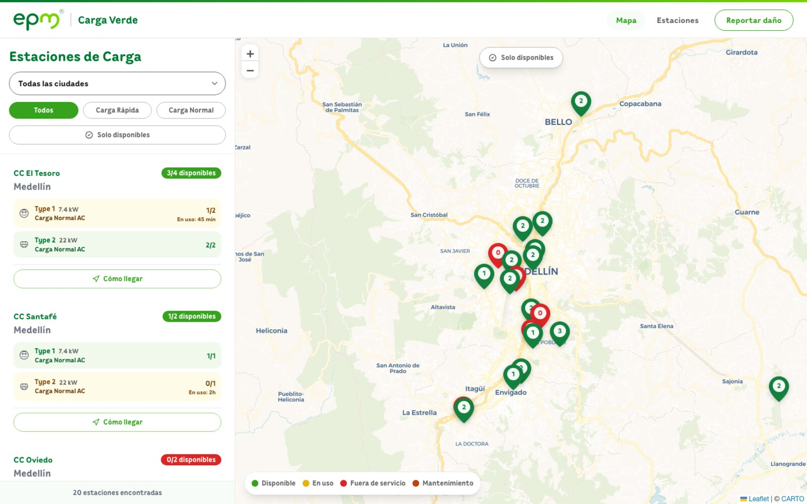
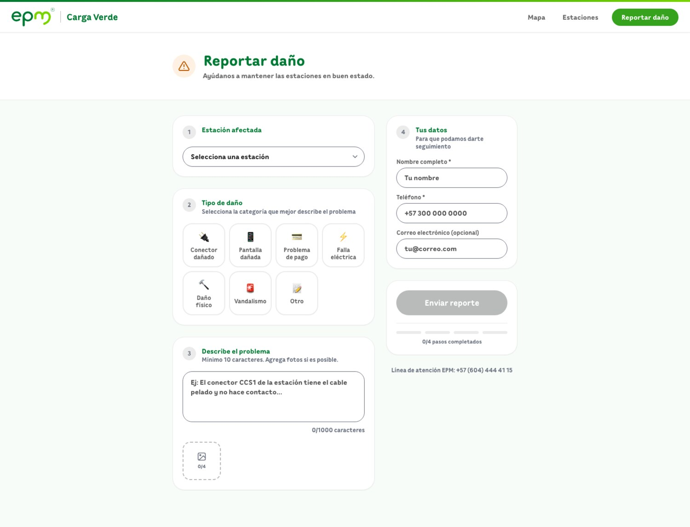
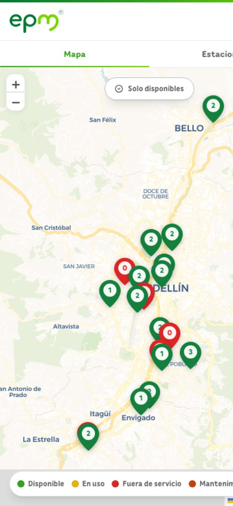

Self-initiated concept · 2025
Real-Time EV Charging for Medellín
A cross-platform app I designed and built to solve a problem I hit every week as an EV owner, then pitched to the utility that runs the chargers.
As an EV owner in Medellín, I'd reach EPM chargers only to find them busy or out of service, with no way to check first. Their own app barely shows status.
Designed and built a cross-platform app (web + native) with availability per connector, type and power filters, a status map, and a damage-report flow.
Pitched it to EPM for free. They loved the design but couldn't adopt external code, so it lives as a working concept, built end to end, solo.

- Availability is the headline: connectors free right now, not the station name
- Type 2 · 22 kW · wait ETA: the three facts that decide a trip
- Map mirrors the list state. One color system, never out of sync
- Filters speak driver: rápida / normal / solo disponibles
Availability first: every station shows how many connectors are free, their type and power, and a live, color-coded status map.
01
The chargers exist. Knowing if they work is the hard part.
EPM runs the public EV charging network across the Medellín metro area. As a driver, the recurring problem was never finding a charger on a map; it was arriving to find it occupied, in maintenance, or simply broken, with no way to know in advance.
Their existing app lists stations, but not the thing that actually decides your trip: is a connector free right now, what type and power is it, and is it even working? So I designed the tool I wanted to use.

A guided damage-report flow, the feedback loop EPM's app is missing, so the network's status stays honest.
02
Designed around the decision, not the database.
Availability-first. Each station leads with how many connectors are free (3/4), the connector type and power (Type 2, 22 kW), and a live status (available, in use with an ETA, in maintenance, or out of service), mirrored on a color-coded map.
Filters that match intent. Filter by city, by charge speed (rápida or normal), and "only available," so the list answers the real question: where can I actually charge right now?
Closing the loop. A structured, seven-category damage-report flow lets drivers flag broken connectors, screens, or payment issues: the missing mechanism that keeps a status map trustworthy.

Mobile-first, because you check this from the driver's seat. Same product as a native app and responsive web, from one Turborepo.
03
Designed it, built it, pitched it.
I built the whole thing end to end: a Turborepo monorepo sharing logic between a Next.js web app and a React Native mobile app, in TypeScript, with the map on Leaflet.
Then I took it to EPM and proposed it for free. The design landed: the brand fit, the handling, the features their app lacked. But as a matter of policy they couldn't adopt code from an external developer, so they didn't open their data or infrastructure to take it further.
Note: EPM doesn't expose a public availability feed, so the live status in the demo is simulated. The product, the UX, and the cross-platform build are real.